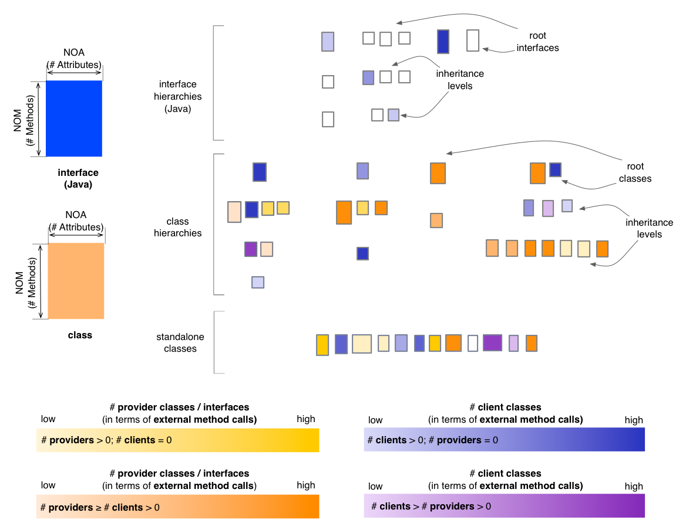
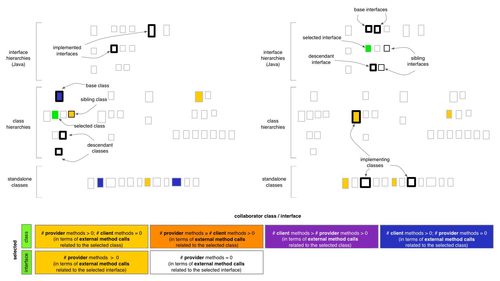

Inheritance Map - Coupling Perspective
The Coupling Perspective of the Inheritance Map
provides insight into the coupling that exists between classes and
interfaces (Java). In the default state,
the Coupling Perspective will render classes and interfaces based on
their predominant nature from the viewpoint of method calls, using
four color gradients:
- if a class only calls other methods but none of its methods are
called (i.e. it is a
pure client), it is rendered in a shade of yellow
- if a class both calls and its methods are called by
other methods, it will be rendered in
a color that depends on which aspect is predominant (i.e. mostly client
shown in a shade of orange, or mostly provider shown in a shade
of magenta)
- if a class or an interface has its methods called by
other methods and does not itself call other methods (i.e. it is a
pure provider), it is shown in a shade of blue

Entity selection
The user may select a class or an interface in the map, in
which case the coloring of the map changes to reflect the coupling from
the point of view of the selcted entity. The selected entity is colored
in green (with no borders). Its ancestors and
descendants are shown with a thickened black border and its siblings
are shown with a normal black border. Its collaborator classes are
colored using
the four colors described below, based on their relation to
the selected class or interface. In case of the Coupling
Perspective, this relation is defined in terms of external method
calls. If a class or an interface has no relation to the
selected entity, its coloring will be disabled.

Other quality perspectives
Complexity, Design Flaws,
Encapsulation, Inheritance
Metrics used
DIT (indirectly), NOA,
NOM